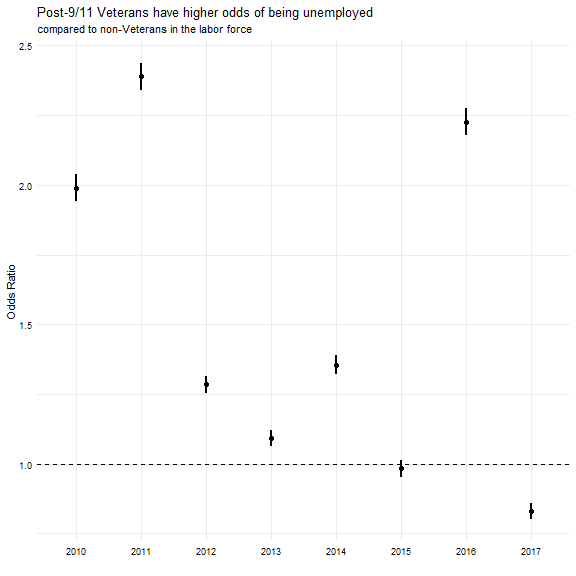
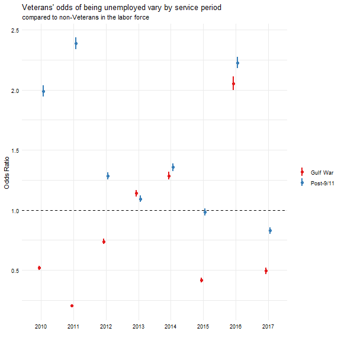

New York Data
Let’s focus on New York State. Open Data NY released numbers on the Employment Status of the Veteran Population. This post will describe and summarize these estimates.
library(tidyverse)
file <- curl::curl_download(
"https://github.com/iecastro/veteran-unemployment/raw/master/data%20and%20codebook/cpsdata_APR2018.xlsx",
destfile = tempfile())
vetdata <- readxl::read_excel(file)
knitr::kable(head(vetdata),
format = "html")| Year | ServicePeriod | CivNonInstPop | Labor Force | LabForce_pct | Employed | Empl_pct | Unemployed | Unempl_pct | NotLaborForce |
|---|---|---|---|---|---|---|---|---|---|
| 2017 | Nonveterans | 14552100 | 9245000 | 0.635 | 8825400 | 0.606 | 419600 | 0.045 | 5307100 |
| 2017 | All Veterans | 759800 | 322600 | 0.425 | 309900 | 0.408 | 12700 | 0.039 | 437200 |
| 2017 | Gulf War-era II | 125800 | 100100 | 0.795 | 96300 | 0.766 | NA | NA | 25700 |
| 2017 | Gulf War-era I | 79500 | 59700 | 0.751 | 58300 | 0.733 | NA | NA | 19800 |
| 2017 | Vietnam, Korean War, and World War II | 351200 | 67000 | 0.191 | 63800 | 0.182 | NA | NA | 284200 |
| 2017 | Other service periods | 203300 | 95800 | 0.471 | 91500 | 0.450 | NA | NA | 107500 |
Veteran unemployment
In NYS, the unemployment rate among Post-9/11 Veterans has had a downward trend over the years. However, with the exception of 2015 & 2017, unemployment in this population is higher than in non-Veterans (and across all Veterans).
vetdata %>%
filter(ServicePeriod %in%
c("Gulf War-era II","Nonveterans","All Veterans")) %>%
ggplot(aes(as.factor(Year),Unempl_pct)) +
geom_col(aes(fill=ServicePeriod),
position = "dodge2")+
theme_minimal() +
scale_fill_viridis_d(option = "cividis") +
labs(fill = " ", y = " ", x = " ",
caption =
"Source: data.ny.gov \n*Data suppresed for estimates of less than 5,000 individuals") +
scale_y_continuous(labels=scales::percent) +
theme(axis.text = element_text(color = "black")) +
annotate("text", x = "2015", y = .05, label = "*", size = 6.3) +
annotate("text", x = "2017", y = .05, label = "*", size = 6.3) +
ggtitle("Labor Force - Unemployed",
subtitle = "New York State - CPS estimates") 
Unemployed refers to people in the labor force who are not working but have been looking for work and are currently available to work. The labor force is comprised of all who are either employed or unemployed. The percentage of the labor force unemployed is the unemployment rate – although, it is not really a rate, but, what do I know?
Veteran participation rate
The labor force participation rate (again, not really a rate) of Post-9/11 Veterans hasn’t dropped below 75% in almost a decade. You may have never heard of the participation rate (I hadn’t until I started exploring this dataset),so to compare, in 2016 the NYS labor force participation rate was 62.8% – that is, one-third of the working age population (not in prison or active duty military) does not participate in the labor force. The national participation rate is not any higher.
vetdata %>%
filter(ServicePeriod == "Gulf War-era II") %>%
ggplot(aes(as.factor(Year), LabForce_pct,
color = CivNonInstPop)) +
geom_point(size = 5) +
geom_segment(aes(x = as.factor(Year), y = .50,
yend = LabForce_pct, xend = as.factor(Year))) +
scale_y_continuous(labels = scales::percent) +
scale_color_viridis_c(direction = -1,
labels = scales::comma) +
labs(color = "Population",
x = " ", y = " ",
caption = "Source: data.ny.gov") +
theme_minimal() +
theme(axis.text = element_text(color = "black")) +
ggtitle(
"Labor force participation rate among Post-9/11 Veterans is steady, \nin spite of an increasing population",
subtitle = "New Yorsk State CPS estimates 2017")
As more Veterans return home, they are still active participants in the labor force. Only one-fith of this population does not participate in the labor force; and that includes Veterans who have retired, are disabled and unable to work, or currently attending school.
Odds of unemployment
Although Post-911 Veterans are more active participants than non-Veterans, they have higher odds of being unemployed.

The odds ratio (OR) tells us the odds of being unemployed if you’re a Post-9/11 Veteran compared to the odds of being unemployed if you’re not a Veteran.
In 2010, Post-9/11 Veterans were twice as likely as a non-Veteran to be unemployed. These odds have improved over the years, and in 2017, Post-9/11 Veterans were about 20% less likely to be unemployed than non-Veterans. Somthing happened in 2016, couldn’t tell you what.
And interesting association in this dataset is that Gulf War Veterans have better odds than Post-9/11 Veterans. They actually tend to have better odds than non-Veterans.

Limitations
These associations are limited to the data available, so it is not possible to assess if these odds are affected by other variables, such as demographics, educational level, or technical skills.
It’s important to note these data are not official BLS estimates, and have limitations regarding how they were sampled and calculated.
The NYS Department of Labor derived annual averages from Current Population Survey (CPS) sample records. CPS is a national, monthly, household survey, with about 2,300 households interviewed in NYS each month.
To calculate odds ratios for 2015 and 2017, the number unemployed was imputed by subtracting the number employed from the labor force count.
Data and R code are posted in GitHub.